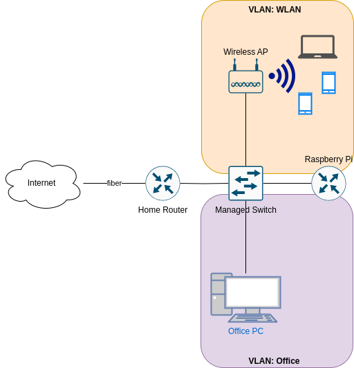

IPv6 prefix delegation using systemd-networkd


Introduction
Recently my ISP (Internet Service Provider) finally provided me with modern IPv6. I at least got an /60 prefix, which allows me to do subnetting, with up to 16 subnets, as the network identifier in IPv6 has 64 bits. So far so good. But I soon realized, that my prefix changes frequently, just as the IPv4 prefix. That however is a problem. I do have two VLANs, beside my default network, that need their own GUA (Global Unicast Address) prefix. So whenever my prefix changes I would need to change my VLAN configurations and my routes. That's not feasible.
Gladly there is an solution to that problem: IPv6 Prefix delegation (PD).
Set up
This is how my network currently looks:

Configuring the WAN-interface
/etc/systemd/network/10--eth0.network
[Match] Name=eth0 Type=ether [Network] Description=WAN Ethernet port DHCP=ipv6 IPv6AcceptRA=yes VLAN=Office VLAN=WLAN [Address] Address=192.168.178.254 Gateway=192.168.178.1 [DHCPv6] PrefixDelegationHint=::/60 UseDelegatedPrefix=yes UseAddress=no [Route] Gateway=192.168.178.1